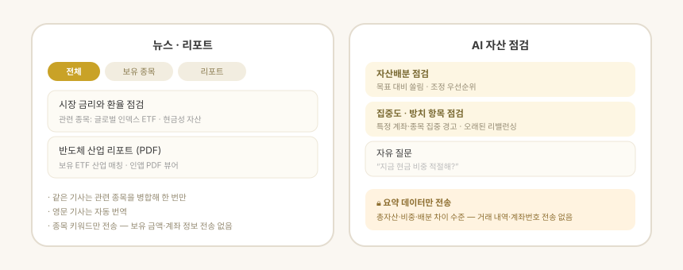

지원 방식: 둘러보기 · 앱에 직접 입력
종목 · 계좌별 목표는 여기가 아니라 자산 탭에서 고칩니다. 목표 비중을 두 곳에 따로 저장하기 때문에, 어느 쪽을 고치는 중인지 헷갈리면 「고쳤는데 안 바뀐다」가 납니다.
| 하는 일 | 어디에 | |
|---|---|---|
| 자산 진단 | 입력 없이 지금 자산을 분석해 편중 · 부족을 진단합니다 | 계획 탭 |
| 목표 제안 | 성향에 맞는 자산군 목표를 제안하고, 적용하면 계속 점검합니다 | 계획 탭 |
| 짜보기 | 아직 사지 않은 구성을 미리 짜 봅니다 | 계획 → 짜보기 |
| 나눔터 | 남이 짜 본 조합을 보고 내 짜보기로 가져옵니다 | 계획 → 짜보기 → 가져오기 |
앱은 계산해 보여줄 뿐 주문을 넣지 않습니다. 매매는 사용자가 증권사에서 직접 합니다.

진단 — 지금 가진 자산
숫자를 직접 설계하지 않습니다. 성향 하나만 고르고, 적용 · 수정 · 무시만 하면 됩니다.
화면 순서
- 자산 구성 — 입력 없이 보유 종목을 자산군(주식 · 채권 · 현금 · 코인 · 금)과 국가(미국 · 한국 · 기타)로 자동 분류해 도넛 하나와 색 점 범례로 보여줍니다. 해외 자산은 기준환율로 원화 환산해 비중을 냅니다. 나라별 비중은 나라별로 보기에서 봅니다.
- 가장 먼저 볼 것 — 편중 · 부족 가운데 가장 심한 하나만 문장으로 크게 보여줍니다. 나머지는 다른 진단 N가지로 접혀 있습니다.
- 목표 제안 — 목표 제안 보기를 눌러야 펼쳐집니다. 투자 성향(안정 · 중립 · 공격) 칩을 바꾸면 목표가 통째로 다시 계산됩니다. 목표 줄마다 퍼센트와 금액을 같이 적습니다 — 「목표 15%」만으로는 얼마인지 모릅니다.
2.0에서 이름이 바뀌었습니다. 「AI 자산 진단」 · 「AI 목표 제안」에서 AI 를 뗐습니다 — 이 화면의 숫자는 전부 정해진 규칙으로 계산하고, 공개 앱에는 AI 설명 기능이 없습니다. 탭 이름도 「구상」에서 「계획」으로 바꿨습니다.
목표를 적용한 뒤 — 모니터링
목표를 적용하면 화면이 모니터링 모드로 바뀝니다.
- 적용한 목표가 기준선이 되어, 이후에는 목표 대비 현재 비중을 비교해서 보여줍니다.
- 조정 기준(설정 > 내 자산)을 벗어난 자산군만 조정 대상으로 잡습니다. 이 기준은 앱 전체에 하나뿐입니다 — 자산 탭의 %p 배지와 조정안이 같은 값을 씁니다.
- 범위를 벗어난 곳만 자동으로 펼쳐져 국가 → 계좌 → 종목(수량 · 분할)까지 내려갑니다. 범위 안은
✓ 범위 안한 줄로 접힙니다. - 상위(자산군)가 범위 안이어도 그 안의 국가 비중이 틀어졌으면 펼쳐집니다.
목표 수정으로 목표만 바꾸거나,목표 다시 받기로 처음부터 새로 제안받을 수 있습니다.
목표 제안 방식
- 성향 칩(보수 · 중립 · 공격)으로 목표를 고릅니다. 숫자를 직접 입력하지 않습니다.
- 목표는 방어자산 하한(현금 · 채권)과 위험자산 상한(코인 · 금 · 단일 국가) 같은 일반적 분산 원칙에 비춰 제안하며, 주식 비중은 나머지로 자동 계산됩니다.
- 적용 / 수정 / 무시 중에서 고릅니다. 수정하면 현금 · 채권 · 금 · 코인 목표를 직접 조정할 수 있고, 나머지는 자동으로 다시 맞춰집니다.
실제 종목 · 수량은 자산 탭에서
계획 탭은 자산군까지만 말합니다. 「채권을 15%까지 늘리세요」가 여기 일이고, 「어느 계좌에서 무엇을 몇 주」는 자산 탭의 조정안이 정합니다.
- 계좌 경계 안에서 조정합니다 — 계좌 간 종목 이동 없이, 각 계좌의 자산으로만 사고팝니다.
- 보유가 없는 자산군은 특정 종목을 찍어 추천하지 않고 카테고리(예: 채권 ETF)로만 안내합니다.
갱신 시점
- 툴바의 새로고침 버튼이나 화면을 아래로 당겨 진단을 다시 계산할 수 있습니다.
- 자산 데이터를 새로 읽으면 진단 · 목표 · 리밸런싱이 자동으로 다시 계산됩니다.
- 시세는 따로 갱신되지만 목표 숫자는 시세가 움직일 때마다 흔들리지 않습니다 — 자산 데이터를 새로 읽은 시점과 사용자가 새로고침한 시점을 기준으로 계산합니다.
짜보기 · 나눔터는 따로 적었습니다
계획 탭 아래의 포트폴리오 짜보기 카드를 누르면 들어갑니다 — 아직 사지 않은 구성을 짜 보는 자리이고, 그 안의 가져오기로 나눔터에 들어갑니다. 화면 그림과 함께 짜보기 · 나눔터에 적었습니다.
안내
- 여기서 제시하는 목표 · 조정 · 비교는 개인 맞춤 투자자문이 아니라 일반적 분산 원칙에 비춘 참고치입니다. 최종 판단과 주문은 사용자가 직접 합니다.
- 부동산(집 · 전세보증금 등)은 리밸런싱 대상에서 제외하고 참고로만 표시합니다.
- 지난 성과는 미래 수익을 보장하지 않습니다.
프라이버시 원칙
- 자산 정보가 기기 밖으로 나가지 않습니다. 진단 · 목표 · 조정안과 짜보기의 주수 · 합성보수 · 지난 성과 계산은 전부 앱 안에서 처리하며, 이 화면은 외부 AI(LLM)를 쓰지 않습니다.
- ETF를 찾고 비교할 때 밖으로 나가는 것은 검색어와 종목 심볼뿐입니다 — 투자금 · 비중 · 보유 자산은 보내지 않습니다.
- 공유 링크의 구성은 주소의
#뒤에 실려 서버로 전송되지 않습니다. - 진단과 목표는 오프라인에서도 그대로 동작합니다(짜보기의 종목 검색과 시세는 네트워크가 필요합니다).